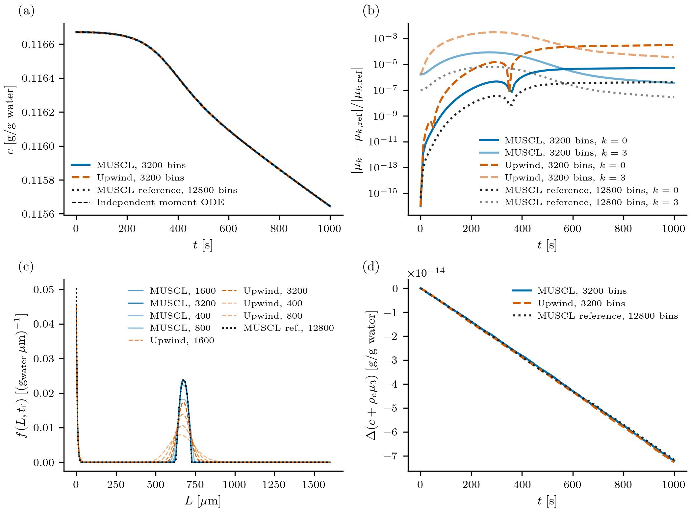
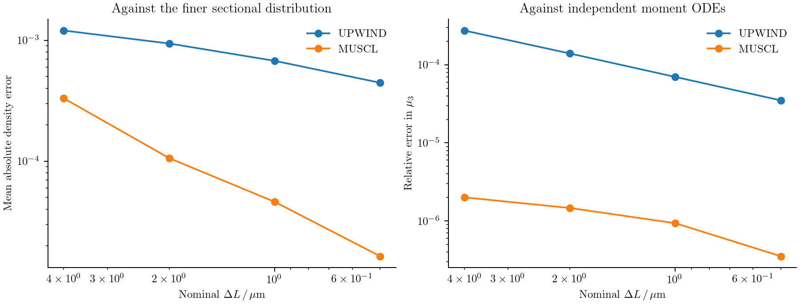

Batch cooling crystallization
Cooling a saturated solution makes crystallization possible, but it does not determine the final crystal sizes. Existing seeds grow, new crystals nucleate, and both processes reduce the supersaturation that drives them. To predict the size distribution, we need to solve a population balance and a solute balance together.
Here we consider a seeded batch of potassium nitrate with size-dependent growth and secondary nucleation. The kinetics and cooling trajectory come from Gunawan, Fusman, and Braatz (2004), Example 2. This calculation illustrates how a rate law reads a shared concentration, how nucleation enters through a boundary, and how the discrete solute balance is constructed from the particle calculation.
Write the two balances
Let $f(L,t)$ denote the number density at crystal length $L$. For $L>0$, growth transports crystals through size space:
\[\frac{\partial f(L,t)}{\partial t} +\frac{\partial\!\left[G(L,c(t),T(t))f(L,t)\right]}{\partial L}=0.\]
Nuclei enter at zero length through the boundary condition
\[G(0,c(t),T(t))f(0,t)=B_0(c(t),T(t)).\]
Write the relative supersaturation as $s(t)=\max[c(t)/c_{\mathrm{sat}}(T(t))-1,0]$. The kinetic laws are
\[G(L,c,T)=k_gs^g(1+\alpha L),\qquad B_0(c,T)=k_b s^b\int_0^\infty L^3f(L,t)\,dL.\]
The concentration decreases as crystal volume increases:
\[\frac{dc(t)}{dt}=-3\rho_c\int_0^\infty L^2G(L,c(t),T(t))f(L,t)\,dL.\]
Length is in µm, time in seconds, and $c$ in grams of solute per gram of water. The volume convention is $\int L^3f\,dL$; no spherical shape factor is inserted. At zero length a nucleus has zero continuum volume. The model sets growth and nucleation to zero below saturation: it does not describe dissolution.
Supply parameters and the cooling trajectory
The reusable recipe is in examples/papers/gunawan2004_case2.jl. Load it from the installed source directory:
using PopulationBalanceModels
include(joinpath(pkgdir(PopulationBalanceModels),"examples","papers","gunawan2004_case2.jl"))
import .Gunawan2004Case2
const recipe = Gunawan2004Case2
p = recipe.parameters()(kb = 4.64e-7, b = 1.78, kg = 116.0, g = 1.32, rho = 2.11e-12, size_factor = 0.1)The fields are $k_b=4.64\times10^{-7}$, $b=1.78$, $k_g=116$, $g=1.32$, $\rho_c=2.11\times10^{-12}$ g/µm³, and $\alpha=0.1$ µm⁻¹. They can be changed explicitly, for example with recipe.parameters(kg=120.0).
Temperature is a prescribed operating history:
\[T(t)=32-4(1-e^{-t/18600}),\qquad c_{\mathrm{sat}}(T)=1.721\times10^{-4}T^2-5.88\times10^{-3}T+0.1286.\]
The recipe implements these as temperature(t) and solubility(T). Unlike temperature, concentration belongs in the state vector because the model must solve for it.
Define growth and nucleation
The following are the callbacks used by the recipe:
supersaturation(ctx) = max(ctx.bulk.c / recipe.solubility(ctx.fields.T) - 1, 0.0)
function growth_rate(L,p,t,ctx)
p.kg * supersaturation(ctx)^p.g * (1 + p.size_factor * L)
end
function nucleation_rate(p,t,ctx)
p.kb * moment(ctx,3) * supersaturation(ctx)^p.b
end
model = PBMModel(
growth = Growth(rate=growth_rate),
nucleation = Nucleation(rate=nucleation_rate,size=0.0),
)growth_rate returns a length velocity in µm/s. nucleation_rate returns a total number creation rate, so it receives no length argument. moment(ctx,3) reads the third moment of this population at the current integration stage. The same callback works with bin numbers or the exactly closed moment representation.
Put nucleation at the boundary
We use a finite length range, 0–1600 µm. The initial distribution is split at its support endpoints so a cell does not straddle the jump in the initial density:
edges = sort!(unique(vcat(collect(0.0:0.5:1600.0),180.5,210.5)))
grid = Grid1D(edges;coordinate=:length)
methods = TermMethods(
growth = MUSCL(),
by_term = (nucleation=BoundaryInjection(:left),),
)
operator = compile(model,grid;methods,bc=SizeBC(NoFlux(),NoFlux()))MUSCL reconstructs the density used in the growth face flux. BoundaryInjection adds $B_0$ to the first bin as an inward number flux; it does not evaluate $f(0,t)=B_0/G(0,t)$. The boundary nucleation term supplies the influx even though the transport boundary itself is NoFlux. Adding an InflowFlux for the same nuclei would count them twice.
The upper edge is closed. Its last bins should remain negligible; otherwise enlarge the domain before interpreting the result.
Couple the solute concentration
Each crystal carries the solute weight $\rho_cL^3$. Use that same weight to calculate how much solute the resolved population gains:
system = PBMSystem((crystals=operator,);
fields = (p,t)->(T=recipe.temperature(t),),
nonnegative_bulk = (:c,),
exchanges = (ConservativeExchange(:crystals,:c,
(L,p,t,ctx)->p.rho*L^3;
mechanisms=(:growth,:nucleation)),),
)ConservativeExchange subtracts the selected discrete particle-material rate from the concentration derivative. Consequently, $c+\rho_c\sum_iL_i^3N_i$ is conserved for this closed system. A boundary nucleus is represented at the first positive pivot and therefore has a small discrete volume. Including nucleation in the exchange accounts for it. That finite-grid contribution approaches the zero-volume continuum source as the first bin is refined.
Both concentration and distribution are evaluated at every Runge–Kutta stage. There is no separate concentration update after the population solve.
Choose the initial conditions
The printed initial condition is a quadratic on 180.5–210.5 µm:
\[f(L,0)= \begin{cases} -3.48\times10^{-4}L^2+0.136L-13.3,&180.5\le L\le210.5,\\ 0,&\text{otherwise}. \end{cases}\]
At the displayed precision this polynomial is negative throughout its support; its maximum is approximately −0.01264. The recipe retains it literally as reported_initial_density. This is an initial-condition discrepancy, not a missing measured dataset. We do not clip the function or infer new coefficients.
For our numerical benchmark, choose a nonnegative parabolic initial population on the same size interval:
\[f(L,0)= \begin{cases} 0.08\left[1-\left(\dfrac{L-195.5}{15}\right)^2\right], &180.5\le L\le210.5,\\ 0,&\text{otherwise}. \end{cases} \qquad c(0)=c_{\mathrm{sat}}(32)=0.1166704.\]
This gives a smooth peak with compact support and known moments. The saturated start makes growth and nucleation initially zero; cooling then creates the driving force. These are stated choices for this calculation, not corrected paper coefficients or a claim to reproduce its original distribution curves. The kinetics, cooling trajectory, and coupled balances are retained.
f0 = recipe.benchmark_initial_density
c0 = recipe.solubility(recipe.temperature(0.0))
N0 = recipe.initial_counts(grid,f0)
problem = PBMProblem(system,(crystals=N0,),(0.0,10.0);
bulk0=(c=c0,),p)
solution = simulate(problem;method=SSPRK33(),dt=0.05,saveat=[0.0,10.0])
crystals = population(problem,solution.u[end],:crystals)
final_concentration = bulk(problem,solution.u[end],:c)initial_counts integrates the initial density over every size bin. For this piecewise polynomial, aligning the support endpoints makes its three-point Gauss rule exact for the initial bin numbers. The full runner continues to 1000 s and compares several grids.
Construct a numerical reference
There is no analytical distribution solution for this concentration-dependent problem. We follow the reference-solution strategy of the source study: run a finer sectional calculation, then check its moments independently. Here the reference is MUSCL with 12800 bins over 0–1600 µm and SSPRK33 at 0.1 s. A second calculation uses 6400 bins at the same time step. Their final relative L1 distribution difference is about 0.42%. A time-step check at 6400 bins, 0.1 versus 0.05 s, changes the distribution by about 0.0013%.
These differences are refinement diagnostics, not certified error bounds; the fine solution is not labelled exact. The paper used its HR1 method at 32000 bins and 0.01 s. We use the package's MUSCL implementation and a smaller documented budget. The runner exposes reference_bins, check_bins, and dt for a more expensive comparison.
The first four continuum moment equations close exactly for the affine growth law:
\[\mu_k(t)=\int_0^\infty L^kf(L,t)\,dL,\qquad \frac{d\mu_0(t)}{dt}=k_b\mu_3(t)s(t)^b,\]
\[\frac{d\mu_k(t)}{dt}=k k_gs(t)^g [\mu_{k-1}(t)+\alpha\mu_k(t)],\quad k=1,2,3, \qquad \frac{dc(t)}{dt}=-\rho_c\frac{d\mu_3(t)}{dt}.\]
An independently coded RK4 calculation integrates these five ODEs and halves its own time step. The final fine-grid third moment differs from the continuum moment result by about $2.8\times10^{-8}$ in relative terms. Agreement of a few moments does not establish pointwise accuracy of the size distribution, which is why the sectional refinement check is also needed.
Compare distributions and bulk concentration

The concentration follows the independent moment calculation closely. Nucleation creates a small-size population, while the initial population shifts toward larger lengths. Upwind broadens these features; MUSCL resolves them more sharply. The panels use the same stated initial conditions and the same rate callbacks on every grid.
The final relative L1 distribution errors against the 12800-bin reference are:
| Nominal bins | Upwind | MUSCL |
|---|---|---|
| 400 | 104% | 28.7% |
| 800 | 81.5% | 9.17% |
| 1600 | 58.6% | 3.99% |
| 3200 | 38.5% | 1.41% |
These distribution errors are much larger than the corresponding third-moment errors. A few accurately predicted moments can hide substantial peak broadening.
ConservativeExchange checks a different property: the resolved material balance $c+\rho_c\sum_iL_i^3N_i$. A nearly constant balance cannot by itself establish an accurate distribution, because the exchange conserves the discrete material even when growth is numerically diffusive.
Measure grid error
The runner integrates the piecewise-constant fine-grid density over each coarse bin. This conservative projection avoids comparing a coarse bin number with a fine-grid point sample. If $\bar f_i^{\mathrm{ref}}$ denotes the projected reference, the mean absolute density error is
\[E_{\mathrm{mean}}= \frac{1}{L_{\max}-L_{\min}} \sum_i\Delta L_i\left|\frac{N_i}{\Delta L_i}-\bar f_i^{\mathrm{ref}}\right|.\]
It also reports relative L1 error, RMS and maximum density errors, concentration error, moment error, and maximum material-balance drift. Coarse grids have 400, 800, 1600, and 3200 nominal bins; extra edges split the initial support when needed. The reference's own spatial error should be considered when interpreting the smallest coarse-grid errors.

Regenerate the complete comparison without an external input file:
julia --project=. examples/cooling_crystallization_benchmark.jl
python docs/benchmarks/plot_transport_comparisons.py cooling --usetex
julia --project=docs docs/make.jlAn optional Julia input file may override initial_density, c0, provenance, grids, reference_bins, check_bins, dt, and tf. Keep the provenance accurate when changing initial conditions. Raw results, reference checks, and run settings are stored in docs/src/assets/gunawan_example2/. These figures replace the earlier separate demonstration panels with one runnable, consistently specified numerical benchmark.
Complete runnable script
The code below is read from the example source during the documentation build. Run it from the repository root using the environment described above.
examples/cooling_crystallization_benchmark.jl
module CoolingCrystallizationBenchmark
using PopulationBalanceModels
include("papers/gunawan2004_case2.jl")
using .Gunawan2004Case2
benchmark_grid(n)=Grid1D(sort!(unique(vcat(collect(range(0,1600;length=n+1)),180.5,210.5)));coordinate=:length)
function continuum_moments(initial_density)
grid=benchmark_grid(3200)
[sum(initial_counts(grid,L->L^k*initial_density(L))) for k in 0:3]
end
# Compatibility for scripts using the earlier runner's helper.
seed_moments(f)=continuum_moments(f)
# Independent integration of the explicitly coded continuum moment equations.
function reference(initial,p,times;dt=0.05)
u=copy(initial);t=0.0;states=Vector{Float64}[]
k1=similar(u);k2=similar(u);k3=similar(u);k4=similar(u)
for target in times
while t<target
h=min(dt,target-t)
moment_rhs!(k1,u,p,t);moment_rhs!(k2,u.+h/2 .*k1,p,t+h/2)
moment_rhs!(k3,u.+h/2 .*k2,p,t+h/2);moment_rhs!(k4,u.+h.*k3,p,t+h)
u .+= h/6 .* (k1.+2k2.+2k3.+k4)
t=h==target-t ? target : t+h
end
push!(states,copy(u))
end
states
end
"""Conservatively integrate a piecewise-constant fine-grid density into target bins."""
function rebin(source,N,target)
out=zeros(length(target));j=1
for i in eachindex(out)
a,b=target.edges[i],target.edges[i+1]
while j<length(source) && source.edges[j+1]<=a;j+=1;end
k=j
while k<=length(source) && source.edges[k]<b
overlap=max(0.0,min(b,source.edges[k+1])-max(a,source.edges[k]))
out[i]+=N[k]*overlap/source.widths[k];k+=1
end
end
out
end
function sectional(n,scheme,f0,c0,tf,dt,times)
grid=benchmark_grid(n)
prob=build(;grid,initial_density=f0,c0,scheme,tspan=(0.0,tf))
timed=@timed simulate(prob;dt,saveat=times)
(;grid,problem=prob,solution=timed.value,seconds=timed.time)
end
final_numbers(run)=population(run.problem,last(run.solution.u),:crystals)
relative_difference(run,truth)=sum(abs.(final_numbers(run).-rebin(truth.grid,final_numbers(truth),run.grid)))/sum(final_numbers(truth))
function run_benchmark(;initial_density=benchmark_initial_density,c0=solubility(temperature(0.0)),
provenance="Chosen initial condition: 0.08*(1-((L-195.5)/15)^2) on [180.5,210.5] micrometers; saturated solution at 32 C. Not a repair of Eq.34.",
initial_moments=continuum_moments(initial_density),grids=(400,800,1600,3200),
reference_bins=6400,check_bins=12800,dt=0.1,tf=1000.0,
output=joinpath(@__DIR__,"..","docs","src","assets","gunawan_example2"))
isfinite(c0) && c0>=0 || throw(ArgumentError("invalid initial concentration"))
!isempty(strip(provenance)) || throw(ArgumentError("record the initial-condition provenance"))
all(n->n isa Integer && n>=2,grids) && reference_bins>maximum(grids) && check_bins>reference_bins ||
throw(ArgumentError("reference grids must be successively finer than the comparison grids"))
all(x->isfinite(x) && x>=0,initial_density.(benchmark_grid(check_bins).centers)) ||
throw(ArgumentError("initial density must be finite and nonnegative; the literal printed Eq.34 is retained separately"))
mkpath(output);times=collect(range(0,tf;length=101));params=parameters()
initial=vcat(initial_moments,c0)
moments=reference(initial,params,times);moment_check=reference(initial,params,times;dt=0.025)
moment_step_difference=maximum(abs.(last(moments).-last(moment_check))./max.(abs.(last(moment_check)),eps()))
open(joinpath(output,"reference.csv"),"w") do io
println(io,"time,mu0,mu1,mu2,mu3,concentration")
for (t,u) in zip(times,moments);println(io,join((t,u...),','));end
end
println("Computing MUSCL reference and refinement checks...")
coarse_ref=sectional(reference_bins,MUSCL(),initial_density,c0,tf,dt,times)
truth=sectional(check_bins,MUSCL(),initial_density,c0,tf,dt,times)
time_check=sectional(reference_bins,MUSCL(),initial_density,c0,tf,dt/2,times)
space_error=relative_difference(coarse_ref,truth)
time_error=relative_difference(coarse_ref,time_check)
open(joinpath(output,"reference_checks.csv"),"w") do io
println(io,"check,coarse_bins,fine_bins,relative_l1,relative_mu3_error")
println(io,join(("spatial",reference_bins,check_bins,space_error,abs(moment(truth.grid,final_numbers(truth),3)/last(moments)[4]-1)),','))
println(io,join(("temporal",reference_bins,reference_bins,time_error,abs(moment(coarse_ref.grid,final_numbers(coarse_ref),3)/moment(time_check.grid,final_numbers(time_check),3)-1)),','))
end
open(joinpath(output,"reference_psd.csv"),"w") do io
println(io,"length,density")
for (L,f) in zip(truth.grid.centers,density(truth.grid,final_numbers(truth)));println(io,L,',',f);end
end
allruns=Tuple{String,Int,Any}[("reference",check_bins,truth)]
for n in grids,(label,scheme) in (("upwind",Upwind()),("muscl",MUSCL()))
result=sectional(n,scheme,initial_density,c0,tf,dt,times)
push!(allruns,(label,n,result))
println((method=label,bins=n,relative_l1=relative_difference(result,truth),seconds=result.seconds))
end
open(joinpath(output,"errors.csv"),"w") do io
println(io,"method,bins,mean_absolute_error,relative_l1,rmse,max_error,relative_mu3_error,concentration_error,material_drift,seconds")
for (label,n,run) in allruns
N=final_numbers(run);target=rebin(truth.grid,final_numbers(truth),run.grid)
err=(N.-target)./run.grid.widths
total0=c0+params.rho*moment(run.grid,population(run.problem,run.problem.u0,:crystals),3)
c=bulk(run.problem,last(run.solution.u),:c)
drift=maximum(abs(bulk(run.problem,u,:c)+params.rho*moment(run.grid,population(run.problem,u,:crystals),3)-total0) for u in run.solution.u)
println(io,join((label,n,sum(abs.(err).*run.grid.widths)/1600,sum(abs.(N.-target))/sum(final_numbers(truth)),sqrt(sum(err.^2 .* run.grid.widths)/1600),maximum(abs.(err)),abs(moment(run.grid,N,3)/last(moments)[4]-1),abs(c-bulk(truth.problem,last(truth.solution.u),:c)),drift,run.seconds),','))
open(joinpath(output,"$(label)_$(n)_psd.csv"),"w") do psd
println(psd,"length,density")
for (L,f) in zip(run.grid.centers,density(run.grid,N));println(psd,L,',',f);end
end
end
end
open(joinpath(output,"moments.csv"),"w") do io
println(io,"method,bins,time,mu0,mu1,mu2,mu3,concentration,material_drift")
for (label,n,run) in allruns
total0=c0+params.rho*moment(run.grid,population(run.problem,run.problem.u0,:crystals),3)
for (t,u) in zip(run.solution.t,run.solution.u)
N=population(run.problem,u,:crystals);mu=[moment(run.grid,N,k) for k in 0:3];c=bulk(run.problem,u,:c)
println(io,join((label,n,t,mu...,c,c+params.rho*mu[4]-total0),','))
end
end
end
open(joinpath(output,"inputs.txt"),"w") do io
println(io,"Kinetics and cooling: Gunawan et al. (2004), Example 2, Eqs.28–34. Explicit alternative initial condition below.")
println(io,provenance);println(io,"c0=",c0,"; continuum initial moments=",initial_moments)
println(io,"MUSCL is the package's limited FV method, not a claim of implementing the paper's HR1.")
println(io,"Final PSD reference: ",check_bins," nominal bins, dt=",dt,"; second reference: ",reference_bins," bins; temporal check at ",reference_bins," bins and dt=",dt/2)
println(io,"Relative L1 reference changes: spatial=",space_error,"; temporal=",time_error)
println(io,"Independent moment RK4 dt=0.05 vs 0.025 final relative change: ",moment_step_difference)
println(io,"Julia ",VERSION,"; tf=",tf,"; zero upper size flux, domain [0,1600] micrometers.")
end
(;spatial_reference_change=space_error,temporal_reference_change=time_error,moment_step_difference)
end
if abspath(PROGRAM_FILE)==@__FILE__
config=isempty(ARGS) ? (;) : Base.include(@__MODULE__,abspath(first(ARGS)))
println(run_benchmark(;config...))
end
end
examples/papers/gunawan2004_case2.jl
module Gunawan2004Case2
using PopulationBalanceModels
export parameters,temperature,solubility,supersaturation,growth_rate,nucleation_rate,
reported_initial_density,reported_seed_density,benchmark_initial_density,
initial_counts,build,build_moments,moment_rhs!
"""Kinetic constants in µm, seconds, and g/g-water; size_factor has units µm⁻¹."""
parameters(;kb=4.64e-7,b=1.78,kg=116.0,g=1.32,rho=2.11e-12,size_factor=0.1)=
(;kb,b,kg,g,rho,size_factor)
temperature(t)=32.0-4.0*(-expm1(-t/18600.0))
solubility(T)=1.721e-4*T^2-5.88e-3*T+0.1286
reported_initial_density(L)=180.5<=L<=210.5 ? -3.48e-4*L^2+0.136*L-13.3 : 0.0
# Retained for existing user scripts; the function denotes a printed initial condition.
reported_seed_density(L)=reported_initial_density(L)
"""Chosen nonnegative initial density for our numerical benchmark, not corrected paper coefficients."""
benchmark_initial_density(L)=180.5<=L<=210.5 ? 0.08*(1-((L-195.5)/15)^2) : 0.0
supersaturation(ctx)=max(ctx.bulk.c/solubility(ctx.fields.T)-1,0.0)
growth_scale(p,t,ctx)=p.kg*supersaturation(ctx)^p.g
growth_rate(L,p,t,ctx)=growth_scale(p,t,ctx)*(1+p.size_factor*L)
nucleation_rate(p,t,ctx)=p.kb*moment(ctx,3)*supersaturation(ctx)^p.b
"""Three-point cell quadrature; align any discontinuities with grid edges."""
function initial_counts(grid,f)
a=sqrt(3/5)
[width/2*(5/9*f(x-width*a/2)+8/9*f(x)+5/9*f(x+width*a/2))
for (x,width) in zip(grid.centers,grid.widths)]
end
"""Native exactly closed moment model. Supply μ0:μ3 and c0 explicitly."""
function build_moments(;initial_moments,c0,tspan=(0.0,1000.0),p=parameters())
model=PBMModel(
growth=Growth(rate=PolynomialRate((growth_scale,(p,t,ctx)->p.size_factor*growth_scale(p,t,ctx)))),
nucleation=Nucleation(rate=nucleation_rate,size=0.0))
op=compile(model,MomentSet(0:3;coordinate=:length))
system=PBMSystem((crystals=op,);fields=(p,t)->(T=temperature(t),),
nonnegative_bulk=(:c,),exchanges=(MomentExchange(:crystals,:c,3;
factor=(p,t,ctx)->p.rho,mechanisms=(:growth,)),))
PBMProblem(system,(crystals=initial_moments,),tspan;bulk0=(c=float(c0),),p)
end
"""
Gunawan et al. 2004, Example 2, Eqs. 28-34 and Table 3.
initial_density and c0 are explicit inputs. Eq. 34 is retained verbatim in
reported_initial_density; its displayed coefficients evaluate to negative values
on the stated support. The separate benchmark_initial_density is an explicit
alternative initial condition, not a repair of the printed coefficients.
Units: length in micrometers, time in seconds, concentration in the paper's
g/g-water basis, crystal density in g/micrometer^3. The state basis and shape
factor follow the paper's V=integral(L^3*n) convention.
"""
function build(;grid=Grid1D(range(0.0,1600.0;length=1601);coordinate=:length),
initial_density,c0,scheme=MUSCL(),tspan=(0.0,1000.0),p=parameters())
first(grid.edges)==0 || throw(ArgumentError("Gunawan boundary nucleation requires a grid starting at L=0"))
model=PBMModel(growth=Growth(rate=growth_rate),nucleation=Nucleation(rate=nucleation_rate,size=0.0))
methods=TermMethods(growth=scheme,by_term=(nucleation=BoundaryInjection(:left),))
op=compile(model,grid;methods,bc=SizeBC(NoFlux(),NoFlux()))
system=PBMSystem((crystals=op,);
fields=(p,t)->(T=temperature(t),),nonnegative_bulk=(:c,),
exchanges=(ConservativeExchange(:crystals,:c,(L,p,t,ctx)->p.rho*L^3;
mechanisms=(:growth,:nucleation)),))
N0=initial_counts(grid,initial_density)
PBMProblem(system,(crystals=N0,),tspan;bulk0=(c=float(c0),),p)
end
"""
Independent continuum moment equations for this linear-in-length growth law.
State is [mu0,mu1,mu2,mu3,c]. Boundary nucleation at L=0 adds no higher moment.
Use an independent ODE solver to validate distribution discretization.
"""
function moment_rhs!(du,u,p,t)
s=max(u[5]/solubility(temperature(t))-1,0.0)
h=p.kg*s^p.g
du[1]=p.kb*u[4]*s^p.b
for k in 1:3
du[k+1]=k*h*(u[k]+p.size_factor*u[k+1])
end
du[5]=-p.rho*du[4]
nothing
end
end